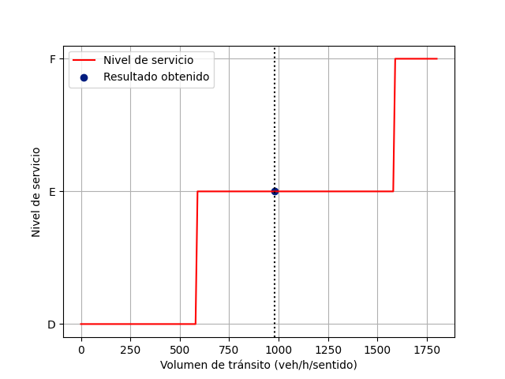
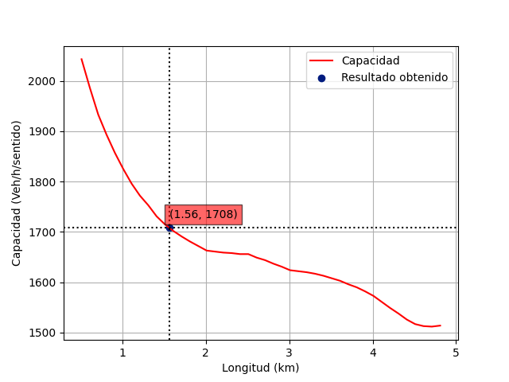
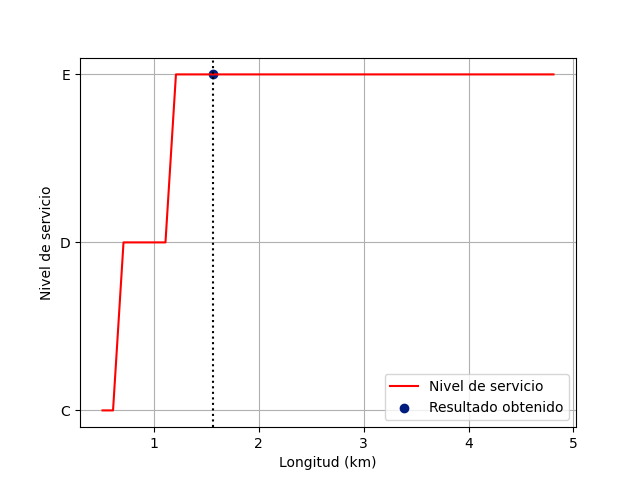
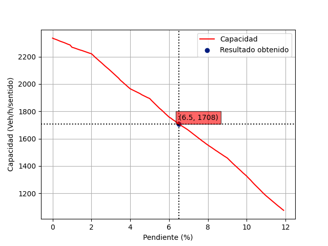
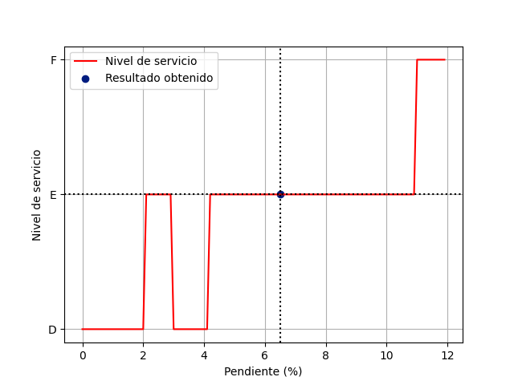
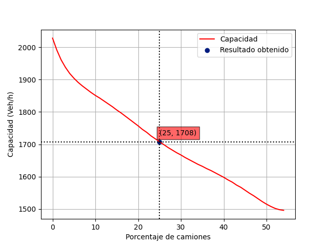
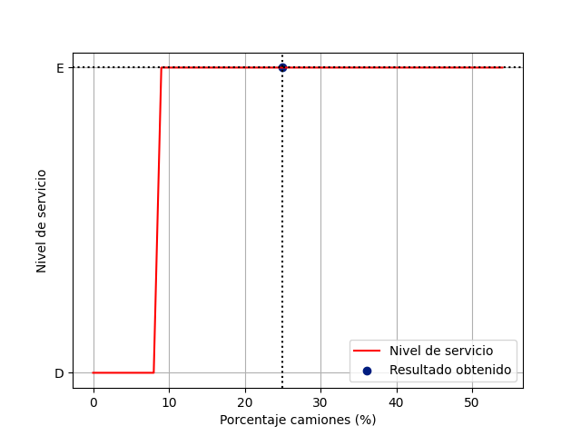
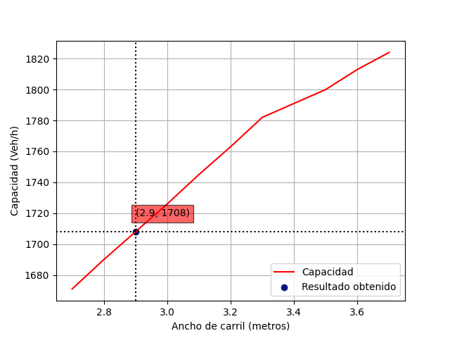
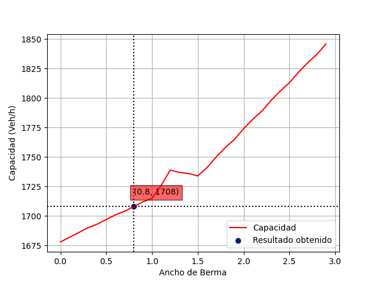
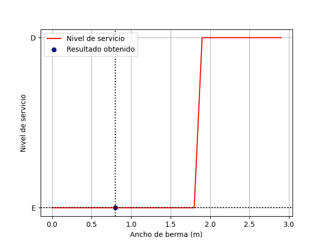

{% import "bootstrap/wtf.html" as wtf %}
Capacidad y Niveles de Servicio
.
Inicio
Blog
Resultados
Último
Multicarril
Iniciar
Datos Ingresados
Variable
Valor ingresado
Información general de la vía
Carretera:
{{datos.carretera}}
Proyecto:
{{datos.proyecto}}
Características de la vía
Ancho de carril:
{{datos.a_carril}} m
Ancho de berma
{{datos.a_berma}} m
Pendiente promedió
{{datos.p_promedió}} %
Longitud del sector
{{datos.l_sector}}
Grado de curvatura:
{{datos.curvatura}} m
Características del tránsito
Distribución por sentido:
{{datos.d_sentido}}/{{datos.d_sentido1}}
Porcentaje de zonas de no rebase:
{{datos.p_no_rebase}} %
Composición vehicular
Porcentaje de automóviles:
{{datos.p_automoviles}} %
Porcentaje de buses:
{{datos.p_buses}} %
Porcentaje de camiones:
{{datos.p_camiones}} %
Volumen horario total ambos sentidos (Q):
{{datos.vol_cap}} Veh/h
Resultados obtenidos
Cálculo de Capacidad
Capacidad en condiciones ideales (C
i
) en ambos sentidos =
3200 Veh/h
Factor de corrección por pendiente (F
pe
)
F
pe
=
{{datos.Fpe}}
(Tabla 1, pendiente = {{datos.p_promedio}} %, longitud del sector = {{datos.l_sector}} km)
Factor de corrección por distribución por sentidos (F
d
)
F
d
=
{{datos.Fd}}
(Tabla 2, zonas de no rebase = {{datos.p_no_rebase}} %, distribución por sentido = {{datos.d_sentido}}/{{datos.d_sentido1}})
Factor de corrección por ancho de carril y berma (F
cb
)
F
cb
=
{{datos.Fcb}}
(Tabla 3, ancho de carril = {{datos.a_carril}} m, ancho de berma = {{datos.a_berma}} m.)
Equivalentes camiones (E
c
)
E
c
=
{{datos.Ec}}
(Tabla 4, pendiente = {{datos.p_promedio}} %, longitud del sector = {{datos.l_sector}} km, porcentaje de vehículos pesados = {{datos.p_camiones}}% + {{datos.p_buses}}% = {{datos.p_camiones + datos.p_buses}}% (C+B).)
Factor de corrección por la presencia de vehículos pesados en pendientes ascendentes. (F
p
)
F
p
=
{{datos.Fp}}
Cálculo de la capacidad
60: C
i
* F
pe
* F
d
* F
cb
* F
p
C
60
: 3200 * {{datos.Fpe}} * {{datos.Fd}} * {{datos.Fcb}}* {{datos.Fp}}
C
60
:
{{datos.cap_60}} Veh/h
Factor de hora pico FHP
FHP = {{datos.FHP}} (Tabla 5, C
60
: {{datos.cap_60}} Veh/h)
Capacidad C
5
C
5
=
{{datos.cap_5}} Veh/h
(C
5
: C
60
* FHP)
Nivel de Servicio
Velocidad en condiciones ideales (V
i
) =
90 km/h
Velocidad ideal de automóviles a flujo libre (V
1
)
V
1
=
{{datos.v1}} km/h
(Tabla 6, velocidad media automóviles, pendiente = {{datos.p_promedio}} %, longitud del sector = {{datos.l_sector}} km)
Factor de corrección al Nivel de Servicio por el efecto de la utilización de la capacidad (F
u
)
F
u
=
{{datos.Fu}}
(Tabla 7, Q = {{datos.vol_cap}} Veh/h, C
60
= {{datos.cap_60}} veh/h)
Factor de corrección por ancho de carril y berma (F
cb
)
F
cb1
=
{{datos.Fcb1}}
(Tabla 8, ancho de carril = {{datos.a_carril}} m, ancho de berma = {{datos.a_berma}} m.)
Velocidad de autos (V
2
)
V
2
=
{{datos.v2}} km/h
(Velocidad de automóviles V
2
: V
1
* F
u
* F
cb
Equivalente camiones (E
C
)
E
c
=
{{datos.Ec_vel}}
(Tabla 9, pendiente = {{datos.p_promedio}}%, longitud del sector = {{datos.l_sector}} km), V
2
= {{datos.v2}} km/h, porcentaje de vehículos pesados C={{datos.p_camiones}}%)
Factor de corrección por la presencia de vehículos pesados en pendientes ascendentes. (F
p
)
F
p
=
{{datos.Fp_vel}}
Factor de corrección al Nivel de Servicio por efecto de la tortuosidad (F
T
)
F
T
=
{{datos.Ft}}
(Tabla 10, pendiente = {{datos.p_promedio}} %, grado de curvatura = {{datos.curvatura}} °), V
1
= {{datos.v1}} km/h, porcentaje de vehículos pesados C={{datos.p_camiones}}%)
Velocidad del tramo en estudio (V
M
)
V
M
=
{{datos.vM}} km/h
(V
M
: V
1
* F
P
* F
T
)
Nivel de servicio
{{datos.Final}}
(Tabla 11. V
M
/V
i
: {{datos.Vi}} %, {{datos.terreno}})
Análisis de sensibilidad
Efecto de los cambios en volumen de tránsito
Gráfica 1.
Variación del Nivel de Servicio debido a cambios en el volumen de tránsito

Tabla #. Resultados obtenidos
Efecto de los cambios de longitud del tramo en la Capacidad y Niveles de Servicio
Gráfica 2.
Variación de la Capacidad por variaciones en la longitud del tramo

Gráfica 3.
Variación del Nivel de Servicio por variaciones en la longitud del tramo

Efecto de la variación de la pendiente en la Capacidad y Niveles de Servicio
Gráfica 4.
Variación de la Capacidad por variaciones en la pendiente del tramo

Gráfica 5.
Variación del Nivel de Servicio por variaciones en la pendiente del tramo

Efecto de la variación del porcentaje de camiones en la Capacidad y Niveles de Servicio
Gráfica 6.
Variación de la Capacidad por cambios en el porcentaje de Camiones

Gráfica 7.
Variación del Nivel de Servicio por cambios en el porcentaje de Camiones

Efecto del ancho del carril en la Capacidad y Nivel de Servicio
Gráfica 8.
Variación de la capacidad por cambios en el ancho de carril

Gráfica 9.
Variación del Nivel de Servicio por cambios en el ancho de carril
Efecto del ancho de la berma en la Capacidad y Nivel de Servicio
Gráfica 10.
Variación de la Capacidad por cambios en el ancho de la berma

Gráfica 11.
Variación del Nivel de Servicio por cambios en el ancho de la berma

{% include "footer.html" %}